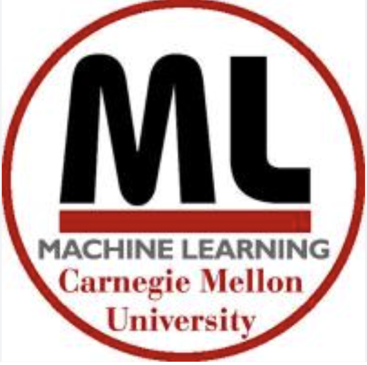
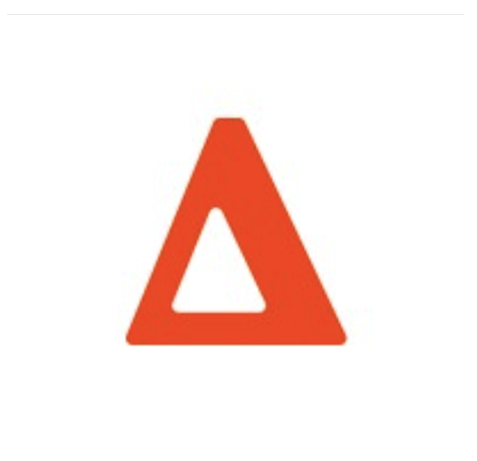
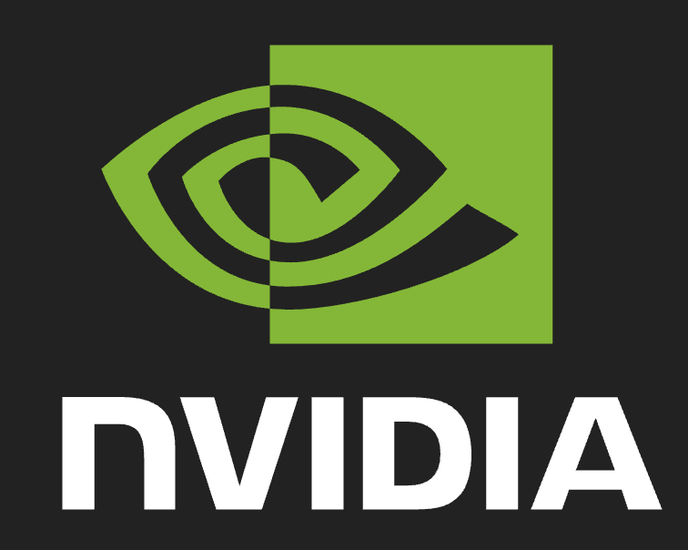

About
I'm an AI researcher and incoming graduate student at the Machine Learning Department of Carnegie Mellon University, pursuing a
Master of Science in Machine Learning . Currently, I'm an undergraduate student at CMU, double majoring in
Computer Science and
Electrical and Computer Engineering . Broadly, I'm interested in building technology that makes the world a better place. Recently, I've
been interested in challenges in Robotics and AI Safety, and am doing work in this area.
Previously, I've been fortunate to work on a variety of research and engineering projects
NVIDIA,
Optiver, and the
CMU Machine Learning Department.
Personally, I enjoy playing tennis and still watch it regularly.
In a past life, I played tennis competitively and achieved a 9.6 UTR and qualified for the Texas state championships.
I'm also interested in Indian culture, particularly film and music.
Timeline
Jan- 2026

Worked with Professors
Katerina Fragkiadaki and
Aviral Kumar on teaching the latest topics in RL. This was the course that first got me
interested in robotics and one of my favorites at CMU.
I also contributed to putting together a brand new textbook for Modern Reinforcement Learning. More on this soon!
June-Aug 2025

Optiver
— Software Engineering Intern (Quantitative Trading Systems)
This was my first exposure to the exciting world of high-frequency trading.
I worked on automating a key part of the trading system. This involved interfacing with
developers, traders, and researchers. As part of the company intern hackathon, I built
an AI tool that sources news headlines from Bloomberg terminal and sends slack updates to relevant
traders in real-time with predictions on instrument price movements. LLMs were useful for boilerplate code,
onboarding onto new codebases, and writing unit tests, but not for any of the core logic. The talent density here was exceptional and I learned a ton.
I made a lot of good friends too.
Jan-May 2025
Worked with Professors
Matt Gormley and
Pat Virtue on teaching the latest topics in Generative AI. This was my favorite course at CMU and
got me really excited about AI. This course takes you from nothing to being able to understand the latest research papers in just a semester (across language,
vision, and multi-modal generative models). Highly recommend this course.
June-Aug 2024

NVIDIA
— Software Engineering Intern (Cloud Engineering & Services)
First ever real-world engineering experience.
I learned a lot about software engineering, distributed systems, and also what I value in a work place.
Probably the only work experience I'll have in my life where AI couldn't do anything useful from a coding perspective.
Jan-May 2024
Worked with Professors
Greg Kesden and
Swarun Kumar on teaching the core systems course at CMU. This was also one of my favorite courses at CMU.
The course's only prerequisite is basic knowledge of DSA and will give you a rigorous understanding of all the major topics in computer systems.
By the end of it, you'll be fluent in C, assembly, GDB, caches, memory allocation, networking, and a lot more. The projects were really intense and useful. Some
of the projects were implementing malloc, a caching web server, and a basic linux shell. I'm glad I took this course pre-chatGPT, so I could truly
appreciate the depth of these projects. I've heard students can
one-shot the class with LLMs now.
June-Aug 2023
I did some self study of the 16-350: Planning Techniques for Robotics course at CMU. I also helped a PhD student
with their research on a modification to the A-star planning algorithm for more efficient pathfinding.
Looking back, I wish I dedicated more time to this project given my current interest in robotics. I was taking
18-213 at the same time, which took up considerable effort.
Jan-May 2023
The course is more of an intro to EE than ECE. There is basically zero content that covers programming in
any meaningful capacity. The course consists entirely of a variety of breadboard projects. It was through this course
that I knew for certain that I was not interested in circuit design. In software, if something is wrong, I definitely did something wrong.
However, with hardware, if something goes wrong, it could easily be the case that I did everything correctly but one of the devices I was using
was faulty. I really disliked that aspect of circuit design, and chose to specialize more on the software side as a result. However, teaching the course was still a valuable experience,
especially this early in my career.
Teaching
Over the years, I've had the chance to take on various teaching roles, and I find that I actually enjoy it quite a bit.
Currently, I teach foundational courses in AI and Systems to both undergraduate and graduate students.
In highschool, I was an English tutor for a couple of foreign exchange Japanese students and was also an SAT ambassador for my school district. I would prepare lessons
that would help dozens of students prepare for the SAT every week leading up to the exam.
Coursework
Deep Reinforcement Learning, Generative AI, Deep Learning, Machine Learning, AI Society and Humanity (philosophy dept.)
Compiler Design, Distributed Systems, Computer Systems, Structure and Design of Digital Systems
Great Ideas in Theoretical Computer Science, Design and Analysis of Algorithms, Parallel and Sequential Data Structures and Algorithms, Functional Programming, Automated Program Verification
Calculus 1-3, Linear Algebra, Probability Theory, Statistical Inference, Concepts of Mathematics (Discrete Math)
Electronic Devices and Analog Circuits, Signals and Systems, Intro. to ECE